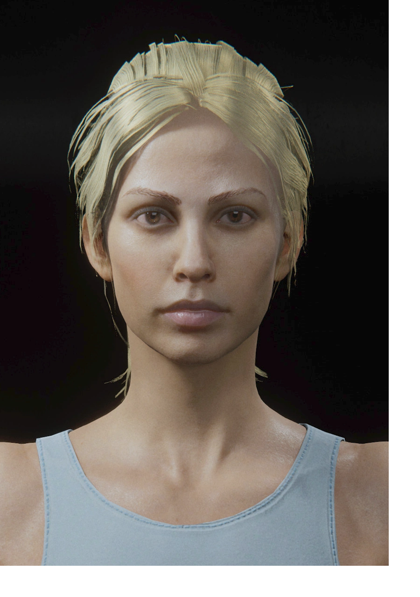
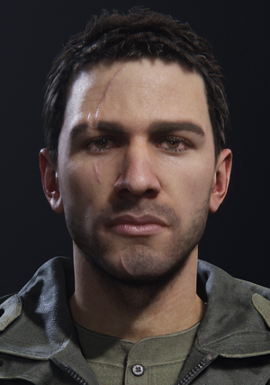
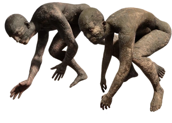
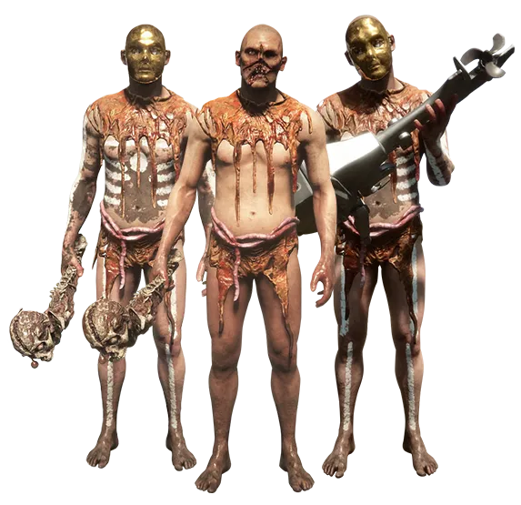
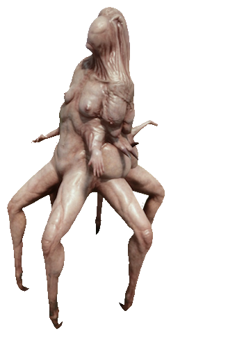
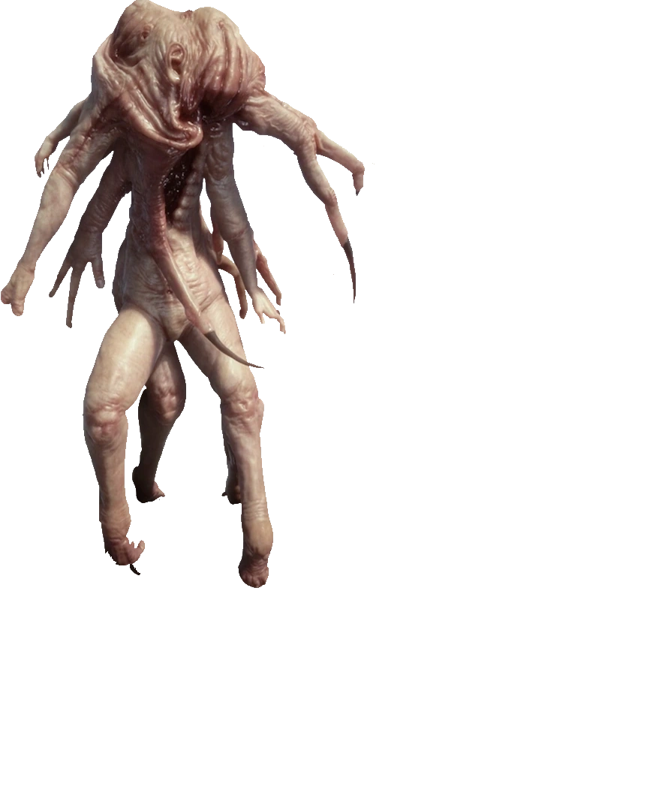
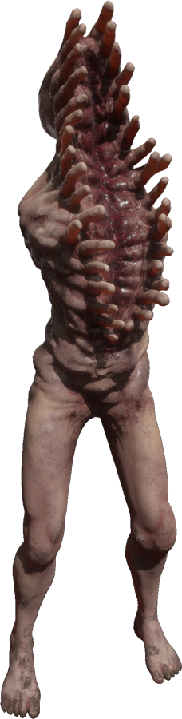
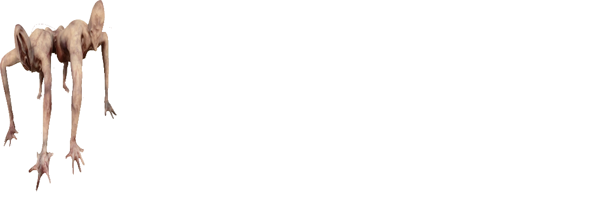
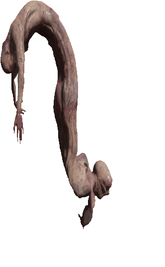

Egy sziget, ahol a halál nem a vég… csak az átalakulás kezdete.
Fő karakterek
Puffton
Edward Puffton a Sons of the Forest milliárdos vállalkozója, aki a szigeten végzett kutatásai során mutálódott.
Karaktere a kapzsiság és hatalom tragikus példája, miközben családja és saját teste is deformálódott a mutáció miatt.
Virginia
Több karja és lába van, rendkívül gyors és agresszív. A Sons of the Forest ikonikus lénye, tragikus és halálos egyszerre.

Timmy
Egy fiatal túlélő, aki véletlenül kerül a szigetre. Bár emberi, gyorsan alkalmazkodik és túlélési készségeit a játék során fejleszti.

Benszülöttek
A sziget eredeti lakói, primitív, de intelligens törzsekben élnek. Csapdákat állítanak, figyelnek, tanulnak, és könnyen bosszút állnak.

Kannibálok
Az erdő rémisztő lakói. A szigeten maradt emberek torzult túlélői, akik csoportosan vadásznak a betolakodókra.

Creepy Virginia
Több karja és lába van, rendkívül gyors és agresszív. Sötét és ijesztő, a barlang mélyén leselkedik.

Armsy
Karokból álló szörnyeteg, amely romboló erővel támad. Az emberi kísérletek kudarcának élő bizonyítéka.

Demon Boss
A barlang legnagyobb és legerősebb ellensége. Gigantikus, minden eddigi mutációt felvonultat, és halálos.
Fingers
Összenőtt ujjakból és csontokból álló lény, amely a barlang sötétjében vadászik. Hang alapján tájékozódik.

Twins
Két összenőtt mutáns test, akik szinkronban támadnak. Rendkívül kiszámíthatatlanok és gyorsak.

John2
Egy rejtélyes, emberi alakot mutató ellenség, aki a barlang mélyén él, és hirtelen támad.

Baby mutans
Egy torz, magzatszerű mutáns, ami gyors és kiszámíthatatlan. Gyakran barlangokban bukkan fel, hirtelen támad, és inkább megijeszt, mint komoly sebzést okoz – de csoportban veszélyes lehet.
Holey
Egy nagyobb, groteszk testű mutáns, tele üregekkel és deformációkkal. Lassabb, viszont erős és kitartó, közelharcban komoly fenyegetést jelent, főleg szűk helyeken, például barlangokban.